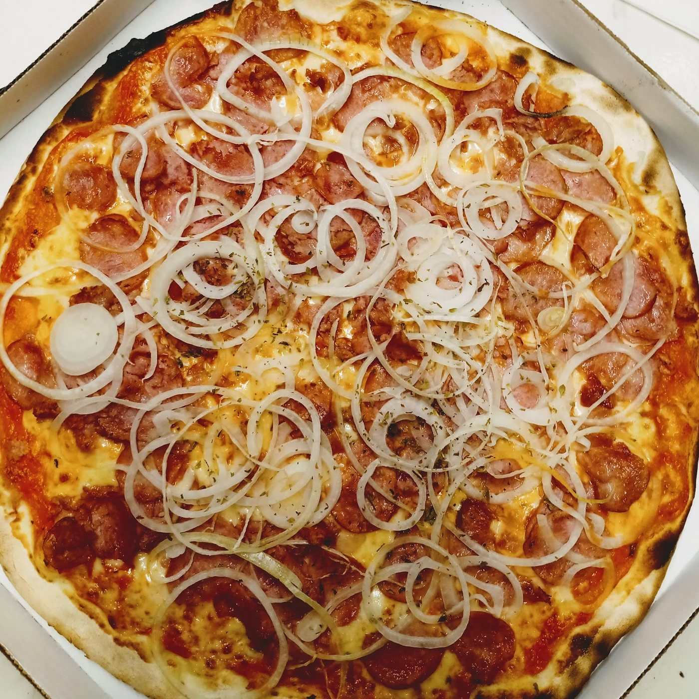
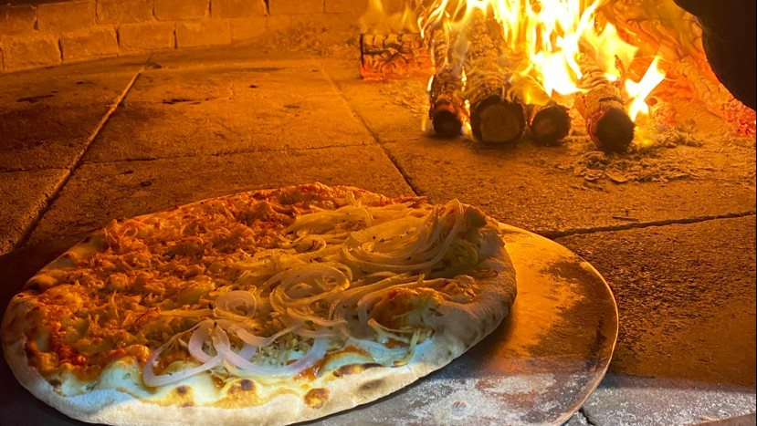

Carne de sol
Sertaneja Especial
Combinação nordestina que surpreende! Molho italiano + mussarela + carne de sol desfiada + banana da terra assada + Catupiry.G R$ 91,90 P R$ 53,90
R. João Chagas Ortins de FreitasQuadra B · Lote 4 · Buraquinho
Pizzaria de forno a lenha em Buraquinho, Lauro de Freitas: 55 sabores salgados e 3 doces, grande de 8 fatias ou pequena de 4, até 2 sabores. Para receber em casa ou buscar no balcão, de terça a domingo.
Abre às 18h


Por onde começar
Clássicas, com catupiry, do mar, verdes e doces, com os preços da grande e da pequena lado a lado.
Abrir o cardápioMonte sua pizzaTipo, tamanho, meio a meio, borda e adicionais. O bairro entra com a taxa publicada.
Montar agoraA estrada da entregaDe R$ 5 no Mais Hotel a R$ 25 no Parque São Paulo: a taxa de cada bairro.
Ver meu bairroForno a lenhaO forno que a casa põe no cardápio impresso, na bio e na descrição do Google.
Conhecer o fornoForno a lenha
O forno a lenha está em todo lugar onde a casa fala de si: no cabeçalho do cardápio impresso (“LA STRADA Pizza — FORNO A LENHA”), na bio do Instagram e na descrição da ficha do Google. E aparece também no que os clientes escrevem.
“Descubra nossa pizzaria artesanal, onde cada pizza é uma obra-prima assada no forno a lenha.”La Strada, na descrição da ficha do Google
“Forno de lenha, pizza deliciosa, preço razoável.”Yann L., no GoogleO forno da La Strada
Sabores da casa
Além das clássicas, o cardápio tem carne de sol com banana da terra, cogumelos com mussarela de búfala, camarão e uma Mediterranea de tomate uva com pesto. Descrições como a casa escreve, com o preço da grande (G) e da pequena (P).
Combinação nordestina que surpreende! Molho italiano + mussarela + carne de sol desfiada + banana da terra assada + Catupiry.G R$ 91,90 P R$ 53,90

Toque oriental com charme italiano! Molho italiano + mussarela de búfala + shitake salteado no azeite + alho + tomate uva.G R$ 101,90 P R$ 59,90

O sabor do mar na sua pizza! Molho italiano + mussarela + camarão temperado + catupiry.G R$ 108,90 P R$ 65,90

Leve e saudável! tomate rasteiro + tomate uva + pimenta calabresa + pesto de manjericão + lascas de parmesão.G R$ 79,90 P R$ 47,90

Sabor refinado e inesquecível! Molho italiano + catupiry + abobrinha + mussarela de búfala + pesto de manjericão + amêndoas laminadas.G R$ 91,90 P R$ 58,90

Refrescante e cheia de sabor! Molho italiano + mussarela + tomate + mussarela de búfala fresca + pesto de azeitonas pretas.G R$ 101,90 P R$ 60,90
Monte sua pizza
Hoje a La Strada recebe pedidos por dois cardápios on-line, cada um com o seu número. Aqui o cliente preenche a comanda, vê o total com borda, adicionais e a taxa do bairro, e manda tudo pronto para um WhatsApp só.
Pizza
Tamanho
Sabores
Borda
Escolha o 1º sabor para ver os ingredientes.
Como receber
Taxas por bairro publicadas na loja da casa. Pedido mínimo do cardápio on-line: R$ 39,90.
Simulação para a prévia, com os preços publicados. Com 2 sabores, o site mostra o valor do sabor mais caro como estimativa; a La Strada confirma o total no WhatsApp.
A estrada da entrega
A loja da casa publica a taxa de cada bairro. A estrada começa no Mais Hotel, na mesma rua, por R$ 5, passa por Vilas do Atlântico (R$ 10), cruza para Stella Maris e Praia do Flamengo, em Salvador (R$ 20), e segue até Abrantes e Jauá, em Camaçari.
Quem já pediu
Forno de lenha, pizza deliciosa, preço razoável.
Excelente experiência! Atendimento ótimo, pizza muito saborosa e entrega rápida. Uma das melhores pizzarias que já pedi. Recomendo muito!
Eu pedi no Delivery. A pizza chegou muito rápido e saindo a fumacinha, aí que 😋! E o entregador muito educado e gentil!
Pode dar 10 estrelas??? Pq aqui em Salvador NUNCA comi uma pizza tão maravilhosa!!! Percebe-se que só tem ingredientes de primeira qualidade, o catupiry- é muito bom!!! Atendimento sempre muito solicito…
Avaliações reais do Google, com nome abreviado e trechos literais, lidas em 09/10/2026.
Fotos da casa
Só fotos publicadas pela própria La Strada, no Google e na loja on-line. Toque para ampliar.
Como funciona
Tempo de preparo informado no cardápio on-line: 60 minutos. Pedido mínimo: R$ 39,90.
Horário
Horário da ficha do Google e do cardápio on-line da casa, iguais em 09/10/2026.
Perguntas
A loja da casa publica 58 bairros com taxa, em Lauro de Freitas, Salvador (Ipitanga, Praia do Flamengo e Stella Maris) e Camaçari. Procure o seu na estrada da entrega; se não estiver lá, pergunte no WhatsApp.
Pode: a retirada está nos dois cardápios on-line da casa. Endereço: R. João Chagas Ortins de Freitas, Quadra B, Lote 4 · Buraquinho, Lauro de Freitas, ao lado do Buffet Mundo Caramelo, na mesma rua do Mais Hotel.
Sim: a grande e a pequena aceitam até 2 sabores. A borda e os adicionais são escolhidos à parte.
De terça a quinta, das 18h às 22h; de sexta a domingo, das 18h às 22h30. Segunda, fechado.
Dinheiro, cartão de crédito, cartão de débito ou Pix.
O cardápio on-line da casa informa pedido mínimo de R$ 39,90 e tempo de preparo de 60 minutos.
Fim da estrada
Monte a pizza, escolha o bairro e mande a comanda pronta para o WhatsApp da La Strada. De terça a domingo.
Junto com este site · OiComanda
O cardápio daqui de cima é só a vitrine. Na hora de pedir, o cliente vai para o cardápio digital da casa, e o pedido cai no painel de vocês, com aviso no celular e sem comissão. Toque no celular ao lado: é o cardápio de verdade, já com os seus pratos.
O cliente monta o pedido com fotos, sabores, bordas e adicionais; o preço soma sozinho.
Abrir →Cada pedido chega organizado, com endereço e pagamento; vocês avançam o status e imprimem a comanda.
Abrir →O cliente paga na hora e o dinheiro cai direto na conta da casa.
O cliente vê quando o pedido saiu, sem ligar para perguntar.
Primeira compra, frete grátis, dia da semana: vocês criam em segundos.
A cada tantos pedidos, um prêmio. O selo conta sozinho pelo WhatsApp do cliente.
O cardápio pergunta o aniversário e o cliente ganha um mimo no dia.
Todos os links da casa numa página com a cara de vocês, para pôr no Instagram.
Abrir →O cliente dá nota e comentário; as respostas chegam no painel.
O cliente pede pela mesa e o pedido chega como “Mesa 5”, sem garçom correndo.
Quem mais pede, quem sumiu e a mensagem pronta para chamar de volta.
Vendas, tíquete médio e os pratos que mais saem.


30 dias grátis, sem cartão e sem compromisso.